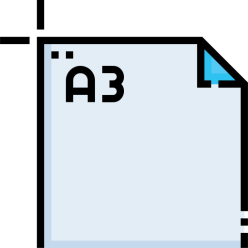

História
A filosofia Lean surgiu na Toyota, no Japão, logo após a segunda
guerra mundial. O criador foi Taiichi Ohno, engenheiro da Toyota.
Taiichi liderou o desenvolvimento de um sistema de gestão entre as
décadas de 50 e 60.
Toyota de Produção (TPS) ganhou superioridade em relação as demais
empresas do segmento, principalmente em relação a produtividade e
níveis de qualidade.
O termo Lean ganhou notoriedade com a publicação do livro “A Máquina
que Mudou o Mundo” (The Machine that Changed the World), de Womack,
Jones e Roos, publicado nos EUA em 1990.
Lean busca a mais alta qualidade no menor prazo e com o menor custo
por meio da eliminação de desperdícios.
Ferramentas
Relatório A3
o Relatório A3 oferece uma abordagem visual e colaborativa para a documentação e resolução de problemas.
VSM
Mapeia o fluxo de valor com foco nas informações e materiais que compõem o processo
SIPOC
Faz o mapeamento de alto nível para compreensão da relação entre os processos, os fornecedores externos e internos, os inputs, os outputs e os clientes da empresa.
5S
Elimina desperdícios resultantes dá má organização do ambiente de trabalho
Cadeia de ajuda
Cria uma sequência de atividades necessárias para se resolver um problema e os recursos necessários que devem estar disponíveis,
MFA
Compreender a voz do cliente e planejar melhorias que sejam conectadas às suas necessidades.
Benefícios
A implantação do Lean proporciona uma série de benefícios para sua organização:
Saiba mais